철도신호기사 (2016-03-06 기출문제)
1과목: 전자공학
1. 진폭이 12V인 교류의 단상 전파 정류된 전압 평균값은 약 몇 V인가?
- 3.82
- 7.64
- 18.84
- 37.7
(정답률: 69%)

2. 그림과 같은 회로에서 동작점을 안정화시키기 위한 소자는?
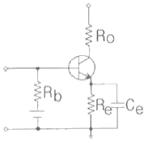
- Ro
- Rb
- Re
- Ce
(정답률: 78%)
3. 검파효율이 90%인 직선검파회로에 반송파의 진폭이 10V이고 AM 변조도가 50%인 피변조파를 인가하는 경우 출력에 나타나는 신호파의 진폭은 몇 V인가?
- 4.5
- 2.5
- 9.5
- 5.2
(정답률: 67%)
4. 디엠퍼시스(de-emphasis) 회로에 대한 설명으로 틀린 것은?
- FM수신기에 이용된다.
- 일종의 적분회로이다.
- 높은 주파수의 출력을 감소시킨다.
- 반송파를 억제하고 양측파대를 통과시킨다.
(정답률: 79%)
5. 이상적인 연산증폭기가 갖추어야 할 조건으로 옳은 것은?
- 입력 임피던스 Zin→0
- 출력 임피던스 Zout→∞
- CMRR→0
- 대역폭 BW=∞
(정답률: 67%)
6. 집적회로 (IC)의 제작에 관련된 설명으로 적합하지 않은 것은?
- 웨이퍼 제작을 위해서는 먼저 다결정을 고순도의 단결정으로 만들어야 한다.
- 원하는 부분만을 불순물을 확산시키기 위해서 SiO2 산화막 등을 사용한다.
- 웨이퍼 제작을 위해서 주로 Si나 Ge 단결정을 사용한다.
- 불순물의 농도 차이에 의해 Si 웨이퍼 속에 불순물을 넣는 방법을 확산법이라 한다.
(정답률: 45%)
7. 다음과 같은 회로는 무슨 회로인가?
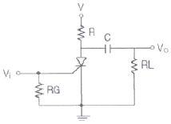
- 비교 회로
- 쌍안정 회로
- 펄스 발생회로
- 톱날파형 발생회로
(정답률: 70%)
8. 그림과 같은 연산증폭기 회로의 출력 Vo(t)는?
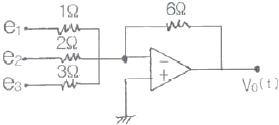
- -6e1-3e2-2e3
- 7e1+4e2+3e3
- e1+2e2+3e3
- 6e1+3e2+2e3
(정답률: 81%)
9. 변압기의 2차측 권선 저항값이 20Ω이고 전압은 12V, 전류는 100mA의 전원이라고 할 때 전압변동률은 몇 %인가? (단, 다이오드의 순방향 저항은 무시한다.)
- 10
- 20
- 30
- 40
(정답률: 61%)
10. 전력증폭기에 대한 설명 중 틀린 것은?
- A급 증폭기의 출력전류는 입력전압의 전주기(full cycle)에서 흐른다.
- B급 증폭기는 전주기(full cycle) 동작을 위해 push-pull 방식으로 사용된다.
- AB급 증폭기는 저주파 증폭기로 사용된다.
- C급 증폭기는 π＜θ＜2π 사이에서 컬렉터 전류가 흐른다.
(정답률: 67%)
11. PN접합 다이오드의 전류-전압 특성에 관한 설명 중 틀린것은?
- PN접합 다이오드에 흐르는 전류는 역포화전류와 관계가 있다.
- 역포화전류는 온도상승에 따라 급격히 상승한다.
- 양의 전압이 커질수록 전류는 증가한다.
- 다이오드에 흐르는 전류는 다이오드 내부저항의 제곱에 비례하여 증가한다.
(정답률: 58%)
12. 10진수 583을 BCD코드로 변환하면?
- 0101 1000 1100
- 1010 1000 0011
- 0101 1010 0011
- 0101 1000 0011
(정답률: 57%)
13. 다음과 같은 다이오드 응용 논리회로에서 출력전압 (Vo)의 크기는 몇 V인가?
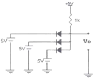
- 10
- 5
- 0
- -5
(정답률: 67%)
14. 지연특성을 갖으며, 채터링(chattering) 현상을 방지하기 위해 사용하는 플립플롭은?
- T플립플롭
- JK플립플롭
- D플립플롭
- RS플립플롭
(정답률: 67%)
15. 트랜지스터에서 주파수 특성을 좋게 하기 위한 것은?
- 베이스 폭을 얇게 한다.
- 컬렉터 폭을 얇게 한다.
- 이미터 폭을 크게 한다.
- 이미터와 컬렉터의 폭을 크게 한다.
(정답률: 73%)
16. 논리소자 중에서 전력소모가 가장 적으면서 잡음 여유도가 좋은 소자는?
- CMOS
- DTL
- ECL
- TTL
(정답률: 81%)
17. 정류회로에서 전압변동률은? (단, Vo： 무부하시 출력전압, Vi： 부하시 출력전압이다.)
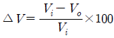
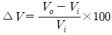
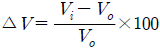
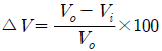
(정답률: 72%)
18. 변조도 80%의 진폭변조에 있어서 반송파의 평균전력이 100W일 때 피변조파의 평균전력은 몇 W인가?
- 118
- 132
- 140
- 160
(정답률: 67%)
19. BJT에 대한 FET의 특징 이 아닌 것은?
- 열에 대하여 동작이 안정하다.
- 입력저항이 작다.
- 게이트전압으로 드레인전류를 제어한다.
- 잡음이 적다.
(정답률: 58%)
20. 다음 중 잡음지수의 설명으로 틀린 것은?
- 무잡음 이상 증폭기의 잡음지수는 1이다.
- 실제의 증폭기 잡음지수 NF는 1보다 크다.
- 시스템의 성능을 평가하는 지수이다.
- 다단 증폭기의 종합지수는 각 단의 잡음지수의 합이다.
(정답률: 63%)
2과목: 회로이론 및 제어공학
21. 분포정수 회로에서 선로의 특성임피던스를 Z0, 전파정수를 γ라 할 때 무한장 선로에 있어서 송전단에서 본 직렬 임피던스는?
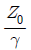
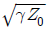
- γZ0
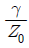
(정답률: 34%)
22. 그림과 같은 회로에서 ix몇 A인가?
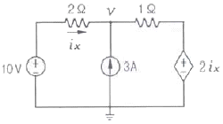
- 3.2
- 2.6
- 2.0
- 1.4
(정답률: 25%)
23.
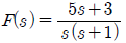
일 때 f(t)의 정상값은?- 5
- 3
- 1
- 0
(정답률: 43%)
24. 그림에서 t=0에서 스위치 S를 닫았다. 콘덴서에 충전된 초기전압 Vc(0)가 1V이었다면 전류 i(t)를 변환한 값 I(s)는?
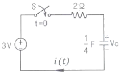
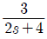
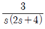
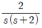
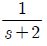
(정답률: 27%)
25. 그림과 같이 전압 V와 저항 R로 구성되는 회로 단자 A-B간에 적당한 저항 RL을 접속하여 RL에서 소비되는 전력을 최대로 하게 했다. 이 때 RL에서 소비되는 전력 P는?
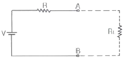
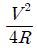
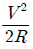
- R
- 2R
(정답률: 48%)
26. 정격전압에서 1kW의 전력을 소비하는 저항에 정격의 80%전압을 가할 때의 전력 (W)은?
- 320
- 540
- 640
- 860
(정답률: 53%)
27. 다음의 T형 4단자망 회로에서 ABCD 파라미터 사이의 성질중 성립되는 대칭조건은?
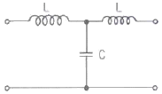
- A=D
- A=C
- B=C
- B=A
(정답률: 42%)
28. 그림의 RLC 직병렬회로를 등가 병렬회로로 바꿀 경우, 저항과 리액턴스는 각각 몇 Ω인가?
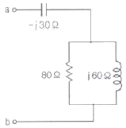
- 46.23, j87.67
- 46.23, j107.15
- 31.25, j87.67
- 31.25, j107.15
(정답률: 22%)
29. 선간전압이 200V, 선전류가 10√3 A, 부하역률이 80%인 평형 3상 회로의 무효전력(Var)은?
- 3600
- 3000
- 2400
- 1800
(정답률: 55%)
30. 평형 3상 Δ결선 회로에서 선간전압(El)과 상전압 (Ep)의 관계로 옳은 것은?
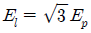
- El=3Ep
- El=Ep
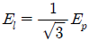
(정답률: 41%)
31.
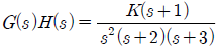
에서 근궤적의 수는?- 1
- 2
- 3
- 4
(정답률: 53%)
32. 그림과 같은 신호 흐름 선도에서 C(s)/R(s)의 값은?
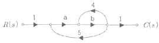
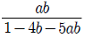
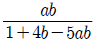
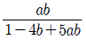
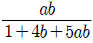
(정답률: 56%)
33. 벡터 궤적이 다음과 같이 표시되는 요소는?
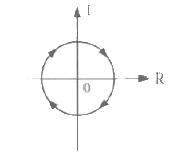
- 비례요소
- 1차 지연요소
- 2차 지연요소
- 부동작 시간요소
(정답률: 27%)
34. 나이퀴스트(Nyquist) 선도에서의 임계점 (-1, j0)에 대응하는 보드선도에서의 이득과 위상은?
- 1dB, 0°
- 0dB, -90°
- 0dB, 90°
- 0dB, -180°
(정답률: 46%)
35. 주파수 응답에 의한 위치제어계의 설계에서 계통의 안정도 척도와 관계가 적은 것은?
- 공진치
- 위상여유
- 이득여유
- 고유주파수
(정답률: 44%)
36. 그림과 같은 이산치계의 z변환 전달함수
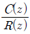
를 구하면? (단,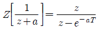
임)(오류 신고가 접수된 문제입니다. 반드시 정답과 해설을 확인하시기 바랍니다.)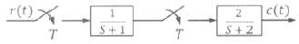
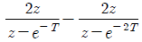
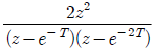
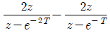
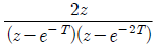
(정답률: 32%)
37. 단위계단 입력에 대한 응답특성이
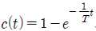
로 나타나는 제어계는?- 비례제어계
- 적분제어계
- 1차지연제어계
- 2차지연제어계
(정답률: 45%)
38. 제어오차가 검출될 때 오차가 변화하는 속도에 비례하여 조작량을 조절하는 동작으로 오차가 커지는 것을 사전에 방지하는 제어 동작은?
- 미분동작제어
- 비례동작제어
- 적분동작제어
- 온-오프(ON-OFF)제어
(정답률: 35%)
39. 다음의 논리 회로를 간단히 하면?
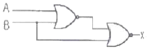
- X=AB
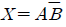
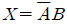
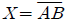
(정답률: 45%)
40. 다음과 같은 상태방정식으로 표현되는 제어계에 대한 설명으로 틀린 것은?
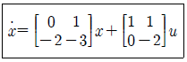
- 2차 제어계이다.
- x는 (2×1)의 벡터이다.
- 특성방정식은 (s+1)(s+2)=0이다.
- 제어계는 부족제동(under dampesd) 된 상태에 있다.
(정답률: 58%)
3과목: 신호기기
41. 220V, 3상 유도전동기의 전부하 슬립이 4%이다. 공급전압이 10% 저하된 경우의 전부하 슬립은?
- 4%
- 5%
- 6%
- 7%
(정답률: 53%)
42. 전기 선로전환기의 전동기 특성곡선에서 전동기가 기동한 후 전류가 감소함에 따라 전동기의 회전수는 어떻게 변화되는가?
- 정지한다.
- 일정하다.
- 감소한다.
- 증가된다.
(정답률: 58%)
43. 8극 60Hz, 500kW 3상 유도전동기의 전부하 슬립이 2.5%라 한다. 이때의 회전수(rps)는?
- 11.6
- 14.6
- 877
- 900
(정답률: 50%)
44. 건널목 제어자 2440형을 궤도에 연결하고자 한다. 연결방법으로 옳은 것은?
- 입력측 ⊖와 출력측 ⊖는 궤도에, 나머지는 직결
- 입력측 ⊕와 출력측 ⊖는 궤도에, 나머지는 직결
- 입력측 ⊖와 출력측 ⊕는 궤도에, 나머지는 직결
- 입력측 ⊕와 출력측 ⊕는 궤도에, 나머지는 직결
(정답률: 58%)
45. 변압기의 부하가 증가할 때의 현상으로 틀린 것은?
- 동손이 증가한다.
- 온도가 상승한다.
- 철손이 증가한다.
- 여자전류는 변함이 없다.
(정답률: 50%)
46. 신호용 무극선조계전기가 여자되었다가 15.6V에서 무여자되었다. 이 계전기의 저항은 몇 Ω인가? (단, 이때 여자전류는 0.12A이고, 무여자 전압은 여자 전압의 65%이다.)
- 500
- 300
- 200
- 100
(정답률: 58%)
47. 다음 ㉠∼㉢에 들어갈 내용이 아닌 것은?
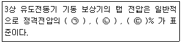
- 35
- 50
- 65
- 80
(정답률: 48%)
48. 직류전동기에 있어서 불꽃 없는 정류를 얻는 데 가장 유효한 방법은?
- 보극과 보상권선
- 보극과 탄소 브러시
- 탄소 브러시와 보상권선
- 자기 포화와 브러시의 이동
(정답률: 45%)
49. 전동차단기에서 장대형 전동차단기의 정격전압은 몇 V인가?
- AC 100V
- AC 24V
- DC 12V
- DC 24V
(정답률: 76%)
50. 단권 변압기에 관한 설명으로 틀린 것은?
- 소형에 적합하다.
- 누설 자속이 적다.
- 손실이 적고 효율이 좋다.
- 재료가 절약되어 경제적이다.
(정답률: 48%)
51. 직권계자권선 저항 0.2Ω, 전기자 저항 0.3Ω의 직권 전동기에 200V를 가하였더니, 부하전류가 20A였다. 이 때 전동기의 속도(rpm)는? (단,기계정수는 3.0이다.)
- 1140
- 1150
- 1930
- 1710
(정답률: 53%)
52. 건널목 지장물 검지장치의 발광기와 수광기를 이용한 광선망의 설치 시 광선 중심축의 지상높이는 건널목 도로면에서 몇 mm를 표준으로 하는가 ?
- 645
- 710
- 745
- 780
(정답률: 58%)
53. NS형 전기 선로전환기의 마찰클러치의 조정 주기로 옳은 것은?
- 연 1회
- 연 2회
- 연 4회
- 연 8회
(정답률: 58%)
54. 운전 중에 역률이 가장 좋은 전동기는?
- 동기전동기
- 농형유도전동기
- 반발기동전동기
- 교류정류자전동기
(정답률: 53%)
55. 3상 전파 정류회로의 평균 출력전압이 200V이면, 3상 전원의 선간전압은 약 몇 V인가?
- 86
- 120
- 148
- 254
(정답률: 40%)
56. 60Hz의 변압기에 50Hz의 동일 전압을 가했을 때의 자속밀도는 60Hz일 때보다 어떻게 되는가?
- 5/6로 된다.
- 6/5으로 된다.
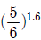
으로 된다.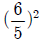
으로 된다.
(정답률: 60%)
57. 신호용 계전기의 규격에서 접점수가 NR2인 계전기는?
- 직류 단속계전기
- 직류 무극 궤도계전기
- 삽입형 자기유지계전기
- 삽입형 직류 완방계전기
(정답률: 43%)
58. 공급전압을 일정하게 하였을 때 변압기의 와전류손은?
- 주파수의 제곱에 비례한다.
- 주파수에 반비례한다.
- 주파수에 비례한다.
- 주파수와 관계없다
(정답률: 43%)
59. 다음에서 설명하는 계전기는?
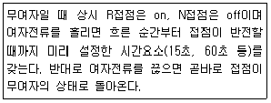
- 완동 계전기
- 완방 계전기
- 시소 계전기
- 유극 계전기
(정답률: 53%)
60. 건널목 경보기에 관한 사항이다. 틀린 것은?
- 경보등의 확인거리는 45m이상으로 하여야 한다.
- 경보등의 점멸횟수는 등당 50±10회/min 이내로 하여야한다.
- 경보음량은 경보기 1m 전방에서 80∼150dB 이내로 하여야한다.
- 발진주파수는 2420형은 20kHz ±2kHz 이내, 2440형은 40kHz±2kHz 이내로 하여야 한다.
(정답률: 58%)
4과목: 신호공학
61. 건널목 전동차단기에 대한 설명으로 거리가 먼 것은?
- 제어전압은 정격 값의 0.9∼1.2배로 설정한다.
- 궤도 중심에서 차단간까지 3.9m가 되도록 설치한다.
- 가공전선등과 차단봉간의 이격거리는 교류 귀전선(교류전차 선로 가압부분을 포함)의 경우 2m 이상으로 한다.
- 전동차단기는 열차가 건널목을 통과하는 즉시 차단봉이 상승하도록 한다.
(정답률: 58%)
62. 고속철도 TVM430 불연속정보 메시지가 아닌 것은?
- ATC 지역 진ㆍ출입 여부
- 열차 유ㆍ무 검지
- 차량기밀장치 동작/해제
- 전차선 절연구간 예고/실행
(정답률: 67%)
63. 단선구간 양쪽정거장에 설치된 폐색전화기를 이용하여 폐색수속을 한 후 지도표를 발행하여 기관사에게 휴대토록하여 운전하는 대용폐색 방법은?
- 격시법
- 지도통신식
- 지도식
- 전령식
(정답률: 66%)
64. 3위식 신호기의 5현시 방법으로 옳은 것은?
- R, RY, Y, YG, G
- R, YY, Y, YG, G
- R, YY, Y, RG, G
- R, WY, Y, WG, G
(정답률: 73%)
65. NS형 전기선로전환기의 밀착도는 기본레일이 움직이지 않는 상태에서 1mm를 벌리는데 정위, 반위 균등하게 몇 kg을 기준으로 하는가?
- 50
- 100
- 180
- 200
(정답률: 74%)
66. 어느 구간의 궤도회로에 4[V], 1[A]의 전원을 공급하였을때 수전 전압의 측정치가 3.95[V] 이면 이 궤도회로의 저항(Ω)은?
- 0.01
- 0.03
- 0.⑤
- 0.08
(정답률: 62%)
67. 어느 역간 열차평균 운전시분이 5분이고 폐색 취급 시분이 3분일 경우 선로 이용률이 80(%)인 단선구간의 선로 용량은?
- 104회
- 124회
- 144회
- 164회
(정답률: 67%)
68. 고전압 임펄스 궤도회로에서 한쪽 궤조절연을 단락하고 다른쪽 궤조절연간의 전압 E2와 송전 전압 E1을 측정하여 극성을 알아보려 할 때 동극성은?
- E1=E2
- E1≤E2
- E1＞E2
- E1＜E2
(정답률: 62%)
69. 장내신호기 설치 위치에 대한 설명으로 거리가 먼 것은?
- 가장 바깥쪽 선로전환기가 열차에 대하여 대향이 되는 경우, 그 첨단레일의 선단에서 100m이상 거리를 확보한다.
- 장내신호기 안쪽에 안전측선이 설비된 경우 200m이내로 할수 있다.
- 가장 바깥쪽 선로전환기가 열차에 대하여 배향이 되는 경우 또는 선로의 교차가 있을 때 이에 부대하는 차량접촉한계표지에서 60m 이상의 간격을 두어야 한다.
- 180km/h이상의 고속화 구간에서 장내신호기 설치 위치는 차량성능, 속도 및 선구에 따라 가장 바깥쪽 선로전환기로부터 시스템이 요구하는 적정거리 이상 확보하여야 한다.
(정답률: 48%)
70. 고압임펄스궤도회로 장치의 구성기기가 아닌 것은?
- 임피던스본드
- 전압안정기
- 수신기
- 동조유니트
(정답률: 62%)
71. 고속철도신호 안전설비 차축온도검지장치에 대한 설명으로 거리가 먼 것은?
- 차축온도검지장치 설치간격은 40km로 한다.
- 차축 검지기는 레일의 내측에 설치한다.
- 차축온도 측정용 센서는 레일의 외측에 설치한다.
- 전자랙은 궤도의 방향에 따라 주소를 정확히 설정한다.
(정답률: 73%)
72. 다음 중 첨단 밀착이 불량할 경우 열차가 탈선될 우려가 있는 선로전환기는?
- 탈선선로전환기
- 대향선로전환기
- 배향선로전환기
- 대향 및 배향선로전환기
(정답률: 70%)
73. 연동 도표 기재사항으로 거리가 먼 것은?
- 출발점 및 도착점의 취급버튼
- 접근 또는 보류쇄정
- 신호기 명칭
- 전원공급장치의 종류
(정답률: 73%)
74. 전자연동장치의 선로변기능모듈(TFM)에 대한 설명으로 거리가 먼 것은?
- 선로전환기 모듈은 4대의 선로전환기를 제어할 수 있어야한다.
- 모듈용 입력 전압은 DC 48V로 한다.
- 모듈단위로 이중화하여 주계 고장 시에도 부계로 즉시 동작되도록 하여야 한다.
- 선로전환기 모듈과 선로전환기 간의 최대거리는 500m로 한다.
(정답률: 36%)
75. 폐전로식 궤도회로에 대한 설명으로 거리가 먼 것은?
- 신호용 전기 회로가 상시 폐로되어 있다.
- 전기 회로가 상시 개방되어 전류가 흐르지 않는다.
- 차량이 그 구간에 들어오면 계전기는 무여자 된다.
- 전원 고장시는 계전기가 무여자로 되어 안전하다.
(정답률: 65%)
76. 직류궤도회로 단락감도 향상방법으로 거리가 먼 것은?
- 송전전압을 증가하고 궤도저항자의 저항치를 많게 한다.
- 레일을 용접 장대 레일화하여 전압강하를 최소화한다.
- 단궤조식 궤도회로로 구성한다.
- 궤도 계전기에 직렬로 저항을 삽입하고 반위접점으로 단락 한다.
(정답률: 53%)
77. 궤도회로의 단락감도 측정위치가 아닌 것은?
- 직류궤도회로는 송전단 레일 위
- 교류궤도회로는 착전단 레일 위
- 병렬궤도회로는 병렬부분의 끝 레일 위
- 임피던스 본드 사용 궤도회로는 송전단 레일 위
(정답률: 63%)
78. 어느 궤도계전기가 여자하였다가 0.23V에 무여자되었다. 이 계전기의 저항은 약 몇 Ω인가? (단, 이 때 여자 전류는 0.038A이고 무여자 전압은 여자전압의 68%이다.)
- 8.9
- 10
- 8.5
- 7
(정답률: 67%)
79. MJ81형 선로전환기에서 기본레일과 텅레일의 밀착 간격은 몇 mm이하로 유지해야 하는가?
- 1
- 2
- 3
- 4
(정답률: 77%)
80. 보수자 선로 횡단 장치에서 300km/h로 운행중인 고속철도구간 선로를 횡단하는 보수자가 20초 이내에 횡단하기 위하여 열차검지구간을 약 얼마정도 확보해야 하는가?
- 500m
- 950m
- 1700m
- 3400m
(정답률: 68%)